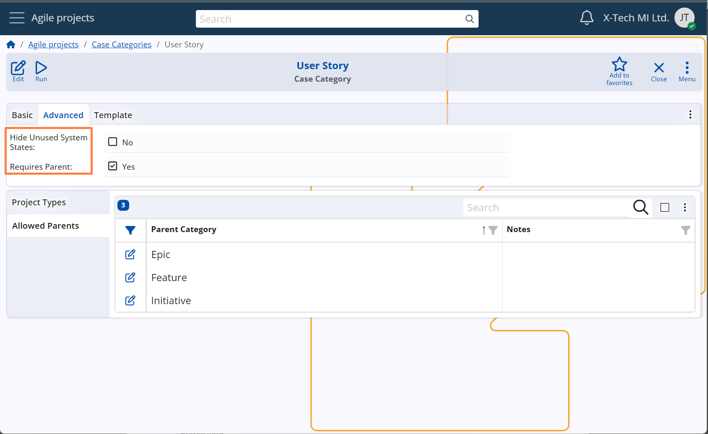
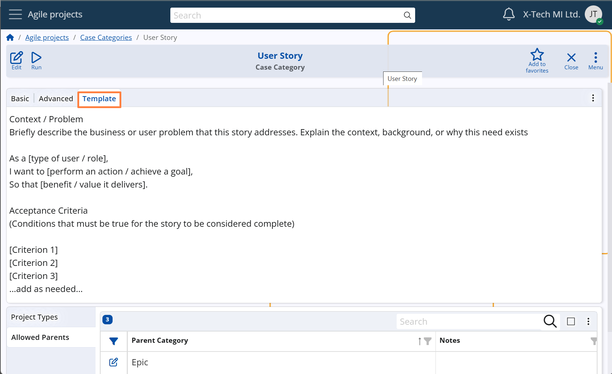

Advanced settings
Requires parent setting
Each Case Category can specify whether a parent Case is mandatory when creating a new Case of that category.
This is controlled by the Requires Parent setting in the Case Category definition.
- If the Requires Parent field is checked, the system will validate that the Parent field is populated when the Case is saved.
- If the field is not checked, a Case can be created without a parent.
This setting helps enforce hierarchical consistency, especially in workflows where certain types of Cases must always be linked to broader context items such as User Stories, Features, or Epics.
Configuration path: Case Category definition → Advanced panel → Requires Parent field
Display panel name: Advanced
System panel name: Case Category
Visibility of System States
The visibility of System States in the status bar of a Case form can be controlled via the Hide Unused System States option in the Case Category definition.
- When enabled, only System States that have at least one defined and active User State will be visible in the Case form.
- When disabled (which is the default), all System States are shown, even if no User States are assigned to them.
This setting is useful in workflows where certain System States are not applicable.
Hiding unused states improves clarity and reduces interface noise — especially in teams that rely on a simplified or custom progression of work.
It also supports a gradual rollout of User States:
- Initially, teams may define only a few User States while keeping all System States visible.
- Later, once the complete User State model is configured, the Hide Unused System States option can be activated to hide irrelevant system states and finalize the workflow experience.
(For more on System States, see section … For User States, see section …)
Configuration path: Case Category definition → Advanced panel → Hide Unused System States field
Display panel name: Advanced
System panel name: Case Category

Description Template
Each Case Category can include a description template — a block of predefined text that is automatically displayed when a new Case of that category is created.
This template is defined in the Description Template field within the Case Category setup.
The purpose of the template is to help users describe the Case in a structured, unified, and consistent manner.
- It may include formatting guidelines, placeholder phrases, and system variables
- Users can modify the content as needed when entering the details of a specific Case
Example:
For a User Story category, the template might include:
As a [type of user/role],
I want to [perform an action / achieve a goal],
So that [benefit/value it delivers]
Configuration path: Case Category definition → Template panel
Display panel name: Template
System panel name: Case Category (Description Template field)
